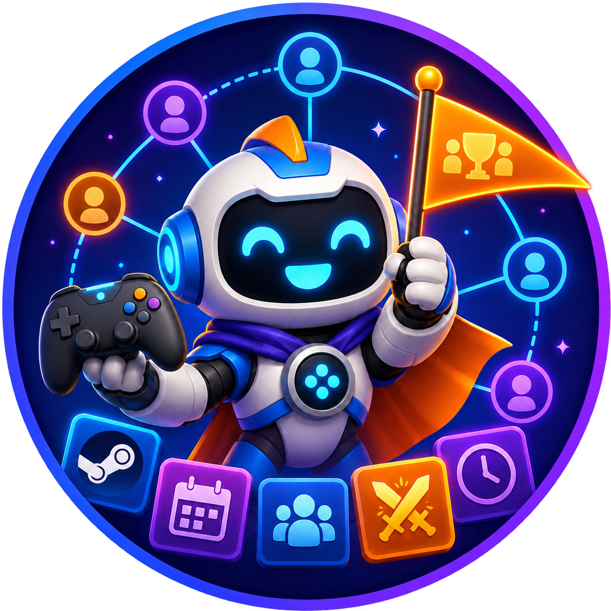

01
Discord-first planning
Start with /gameplan start. Choose a game directly, open a Game Vote, or build from a voice channel already in progress.
No Friday-night chat spiral. GamePlan turns “what should we play?” into a Game Night everyone can actually join—even when plans change.
View GamePlan on GitHubSelf-hosted · Docker Compose · MIT licensed

Plan where your group already talks
GamePlan handles the awkward coordination work without pulling the group into another place.
Start with /gameplan start. Choose a game directly, open a Game Vote, or build from a voice channel already in progress.
Players link a public Steam library through a private, one-time browser link. GamePlan finds games the group can play together—no Steam password involved.
Confirmed Game Nights land in a dedicated Session Feed. Each plan gets its own thread for RSVPs, changes, and the conversation that belongs with it.
Built for real life
Game night is rarely a clean two-hour block with everyone arriving together. GamePlan keeps the shared plan useful as the evening moves.
Set up a repeating rhythm for the group, then let each actual Game Night become its own concrete plan.
Capture when people can arrive and when they need to leave, so the roster reflects the night you really have.
Plan multiple games in one session instead of pretending the group will want the same thing all evening.
When the live roster or game choice changes, opted-in players get a useful notification—never an @everyone blast.
How it works
Run the Docker Compose stack on an always-on machine behind public HTTPS.
Create your Discord application, grant only the permissions it needs, and choose the Session Feed with /gameplan server.
Run /gameplan start, compare compatible games or open a Game Vote, then publish the plan.
Self-hosting
GamePlan is built for operators who want control without building a platform around it. A modest always-on machine is enough for an initial community.
Use a home server with a reliable public route, a managed container platform, or an inexpensive VPS—Hetzner is one example. GamePlan depends on none of them.
Caddy, Nginx, Traefik, or equivalent
App · notification worker · migrations
Back up the volume; never expose port 5432
Discord must reach the interactions endpoint and players must open one-time browser links.
Monitor /healthz, container restarts, disk space, and backup failures.
Keep encrypted PostgreSQL backups away from the host and rehearse recovery.
Documentation
Configure the environment, start Compose, register the command, and choose a Session Feed.
Read quickstart → DISCORDCreate the application, configure HTTPS interactions, and grant the minimum permissions.
Read bot setup → OPERATECover health checks, backups, updates, rollbacks, and incident handling.
Read operations → TRUSTUnderstand stored data, protected tokens, browser sessions, and deletion paths.
Read security guide →FAQ
No. GamePlan is a self-hosted open-source project. You choose the machine, domain, HTTPS setup, and backup approach.
No. Steam OpenID proves the player’s Steam ID, and the Steam Web API reads a public library. GamePlan never asks for a Steam password, session cookie, or launcher credential.
Steam must be allowed to report ownership for GamePlan to compare compatible games. Profile and game details need to be public for that comparison to work.
The host can update the live roster or replan for it. GamePlan records the change in the discussion and can notify opted-in players through their selected notification route.
No. Games Tonight updates never use @everyone or @here. Players choose whether notifications are off, sent by DM, posted to the thread, or both.
Yes. GamePlan and its repository artwork are available under the MIT License.
Friday is closer than it looks
Run GamePlan on infrastructure you control and keep the plan where the group already is.
Explore GamePlan on GitHub